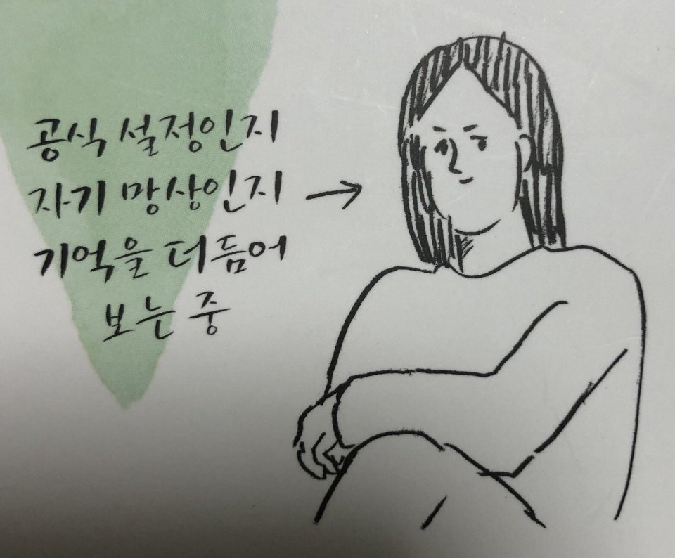

다롱이와 칭구들
- 카프리썬
- 서세지
- 소더기
다롱이
다롱이란?
BL을 좋아하는 러너가 줄여져서 'BL러'가 된 것으로 추정되는 단어.
이보다 더 표기하기 편하게 줄이면 '벨러'가 된다.
부녀자와는 비슷한 뜻이지만 이쪽은 비하적 어감보다는 BL을 좋아하는 쪽이라는 사실만을 담고 있는 단어.
남성 BL러는 부남자라고 한다.
실질적으로 두가지 뜻이 있는데 온갖 커플링 덕후들이 모여있는 커플링 중심 덕 사이트에서 각 커플 계층을 논하는 토론을 할때는 BL 한정으로 좋아하는 사람으로 쓰이며 그냥 쓰일때는 BL을 향유하는 사람으로 쓰인다.
이런 미묘한 차이가 있긴 하지만 딱히 문제삼지는 않는 듯 하다.
기본 오타쿠층에서 만들어진 단어라서 아직은 '오타쿠'인 BL 향유층만 이른다.
